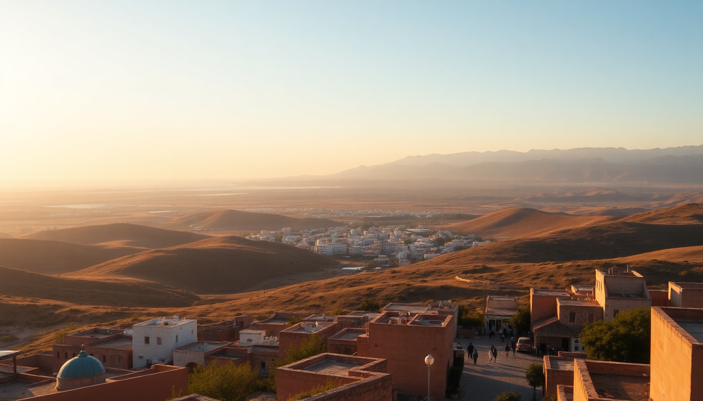

Best Day Trips from Essaouira: Sidi Kaouki, Oualidia & Mogador

After three days exploring Essaouira’s blue-and-white medina and the fish grills at the port, I started to get restless. The city is charming, but the real magic lies just outside it. I rented a small Renault Clio from a shop near Bab Marrakech and spent a week bouncing between three very different day trips: Sidi Kaouki for wild surf vibes, Oualidia for the best oysters of my life, and Mogador Island for a dose of history you can’t get anywhere else. Here’s exactly what I learned.
Is Sidi Kaouki worth the hype for surfers and non-surfers alike?
Sidi Kaouki is about 25 kilometers south of Essaouira — a straight shot down the coastal road. I’m not a surfer, but I went anyway because everyone told me the beach alone was worth it. They were right. The sand stretches for miles, and the wind is relentless, which makes it a kite-surfing paradise. I watched a dozen kite surfers carve through the waves near Le Kaouki Beach Club, and even from the shore it felt electric.
For non-surfers, the main draw is the raw, undeveloped coastline. I walked north from the main beach for about 20 minutes and found a spot where the only sounds were the wind and the occasional donkey. The village itself is tiny — a handful of guesthouses and two or three restaurants. I ate lunch at Restaurant Chez Fatima, where the grilled sardines were simple and perfect, and the mint tea came in a glass so hot I had to wait five minutes to sip it.
If you want to surf, Sidi Kaouki Surf Station rents boards for around 150 dirham a day and gives lessons for beginners. I saw a group of French teenagers catching their first waves, and the instructors were patient. The vibe here is nothing like Taghazout — it’s quieter, less commercial, and the waves are less crowded. But bring a windbreaker. The wind picks up by noon and doesn’t stop until sunset.
What makes Oualidia a must-visit for seafood lovers?
Oualidia is about 100 kilometers northeast of Essaouira, which makes it the longest day trip on this list. The drive took me about 90 minutes on the N1, mostly straight and well-paved, with the ocean on my left for the last stretch. The town is built around a protected lagoon, and the water is calm enough to swim in even when the Atlantic is angry. I visited in late September, and the lagoon was warm enough for a long float.
The real reason to go is the oysters. The lagoon is one of Morocco’s main oyster-producing regions, and you can eat them straight from the source. I sat down at Le Lagon restaurant, which has a terrace right over the water. I ordered a dozen local oysters (30 dirhams — about $3) and a plate of grilled shrimp. The oysters were briny, clean, and served with lemon and a little harissa. I ate them so fast the waiter laughed.
After lunch, I rented a kayak from a guy on the beach for 50 dirhams and paddled across the lagoon to the sandbar on the far side. The water was so clear I could see starfish on the bottom. If you have time, La Sultana Oualidia is a luxury hotel with a pool overlooking the lagoon, but I didn’t stay — it’s expensive, and the town has a few decent guesthouses like Hotel L’Hippocampe that are more budget-friendly.
Should you visit Mogador Island or skip it?
Mogador Island is visible from Essaouira’s port — it’s that dark lump on the horizon you see from the ramparts. I almost skipped it because the boat tours seemed touristy, but I’m glad I didn’t. The island is a protected nature reserve, and the only way to get there is by hiring a boat from the port. I paid 200 dirhams for a round-trip with a fisherman named Hassan, who took me out in his wooden boat at 9 AM.
The island itself is barren and rocky, with crumbling Portuguese fortifications from the 16th century. The ruins are not preserved — they’re just there, left to the wind and the gulls. I walked through the old prison cells and climbed to the top of the watchtower, where the view of Essaouira’s coastline was worth the steep climb. The island is also a bird sanctuary, and I saw dozens of Eleonora’s falcons circling overhead.
The boat ride is about 20 minutes each way, and the water can get choppy. I got splashed on the way back, so bring a dry bag for your phone. The whole visit takes about two hours, including the boat time. I wouldn’t call it a full-day trip — it’s more of a morning excursion — but it’s a unique perspective on Essaouira that most tourists miss. Just don’t expect any facilities on the island. No cafe, no bathroom. Plan accordingly.
How do you get between Essaouira and these day trips?
I rented a car from Avis at the Essaouira airport, but you can also find local agencies in the medina. The roads are good — the N1 to Oualidia and the coastal road to Sidi Kaouki are both paved and well-marked. For Mogador Island, you don’t need a car; just walk to the port and negotiate with a boat captain. I recommend going early, because the wind picks up in the afternoon and some captains won’t cross.
If you don’t want to drive, grand taxis from Essaouira’s main square can take you to Sidi Kaouki for about 150 dirhams one-way. For Oualidia, you’re better off with a private driver or a rental, because the public bus is slow and only runs twice a day. I saw a few organized tours from Essaouira to Oualidia, but they felt rushed — you get maybe two hours at the lagoon before they herd you back.
When is the best time of year for these day trips?
I went in late September, and the weather was ideal — warm days around 28°C, cool evenings, and minimal wind in the mornings. Sidi Kaouki is best from May to October, when the water is warm enough to surf without a wetsuit. Oualidia’s lagoon is pleasant year-round, but the oyster season peaks in winter, when they’re fattest. Mogador Island is fine any time the wind isn’t howling, but avoid July and August if you hate crowds — Essaouira fills up, and the boat queues get long.
Winter (November to March) is windier and cooler, but the waves at Sidi Kaouki get bigger, which serious surfers prefer. I met a guy from Spain who comes every January just for the swells. For non-surfers, spring (April to June) is the sweet spot: fewer tourists, wildflowers on the coastal hills, and the lagoon at Oualidia is glassy-calm.
FAQ
Is it safe to drive from Essaouira to Oualidia alone? Yes, the road is well-maintained and straight for most of the way. Police checkpoints are common but friendly — they wave you through after a quick greeting. Just avoid driving after dark, because the road has no streetlights and the occasional donkey or stray dog crosses without warning.
Can you visit Mogador Island without a guide? You don’t need a formal guide, but you need a boat. The fisherman who took me out spoke no English, and I spoke no Arabic, but we managed with hand gestures. The island has no marked paths, so it’s easy to wander around on your own. Just stay off the cliffs — the wind can knock you off balance.
Are the oysters in Oualidia safe to eat? Yes, the lagoon is clean and the oysters are farmed under regulation. I ate them raw at Le Lagon and had no issues. If you’re nervous, order them grilled — the local restaurants do them with garlic butter and they’re just as good.
Conclusion
- Sidi Kaouki is worth it even if you don’t surf — the beach is wild, empty, and perfect for a long walk or a windbreak-protected picnic.
- Oualidia is the best seafood stop within two hours of Essaouira, especially if you like oysters and calm lagoon swimming.
- Mogador Island is a quick, cheap, and historically rich morning trip — but bring water, sunscreen, and a windbreaker.
- Rent a car for flexibility, or negotiate a grand taxi for Sidi Kaouki. For Oualidia and Mogador, a car or private boat is best.
- Visit in spring or early autumn for the best balance of good weather and thin crowds.